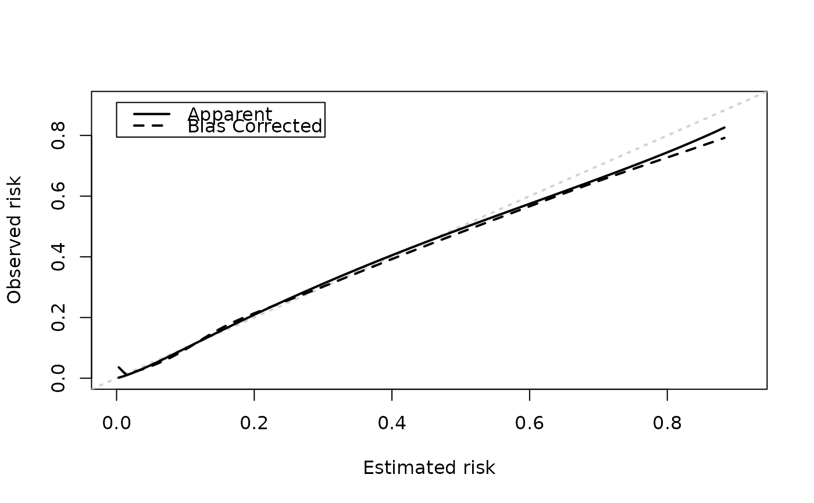

Plot apparent and bias-corrected calibration curves
Arguments
- x
an object returned from
validate. Original call should have specified 'eval' argument. Seescore_binary.- xlim
x limits (default = c(0, max of either curve))
- ylim
y limits (default = c(0, max of either curve))
- xlab
a title for the x axis
- ylab
a title for the y axis
- app_col
color of the apparent calibration curve (default = 'black')
- bc_col
color of the bias-corrected calibration curve (default = 'black')
- app_lty
line type of the apparent calibration curve (default = 1)
- bc_lty
line type of the bias-corrected calibration curve (default = 2)
Value
plots apparent and bias-corrected curves. Silently returns a data.frame that can be used to produce a more 'publication ready' plot. Columns are as follows: predicted = values for the x-axis, apparent = value of apparent curve, bias_corrected = value of bias-corrected curve.
Examples
library(pminternal)
set.seed(456)
# simulate data with two predictors that interact
dat <- pmcalibration::sim_dat(N = 2000, a1 = -2, a3 = -.3)
mean(dat$y)
#> [1] 0.1985
dat$LP <- NULL # remove linear predictor
# fit a (misspecified) logistic regression model
m1 <- glm(y ~ x1 + x2, data=dat, family="binomial")
# to get a plot of bias-corrected calibration we need
# to specify 'eval' argument via 'calib_args'
# this argument specifies at what points to evalulate the
# calibration curve for plotting. The example below uses
# 100 equally spaced points between the min and max
# original prediction.
p <- predict(m1, type="response")
p100 <- seq(min(p), max(p), length.out=100)
m1_iv <- validate(m1, method="cv_optimism", B=10,
calib_args = list(eval=p100))
# calib_ags can be used to set other calibration curve
# settings: see pmcalibration::pmcalibration
cal_plot(m1_iv)
